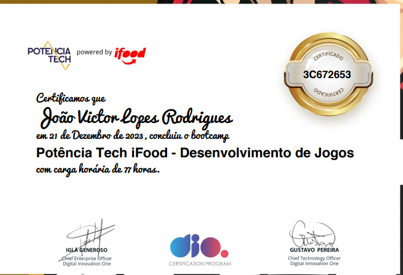
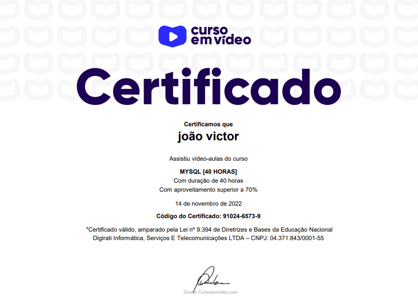
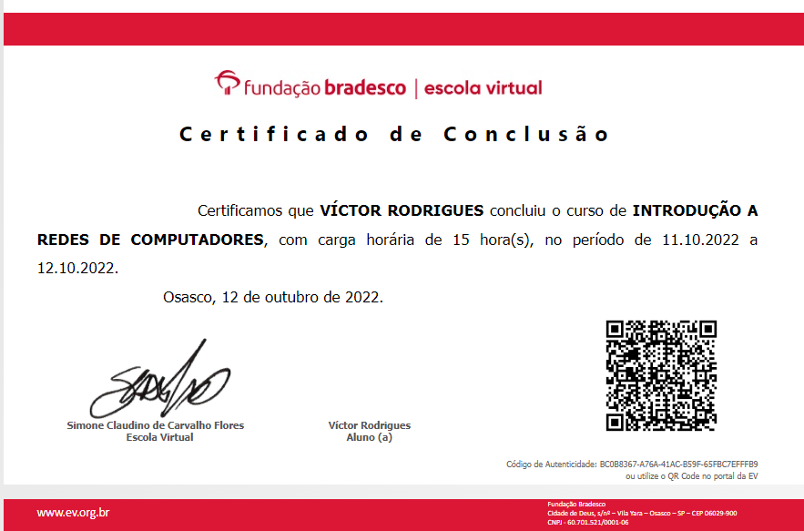
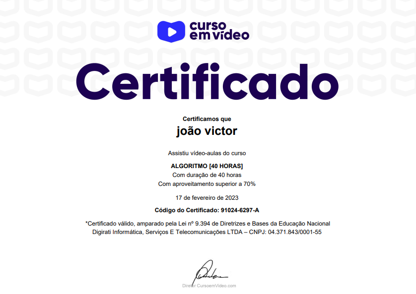
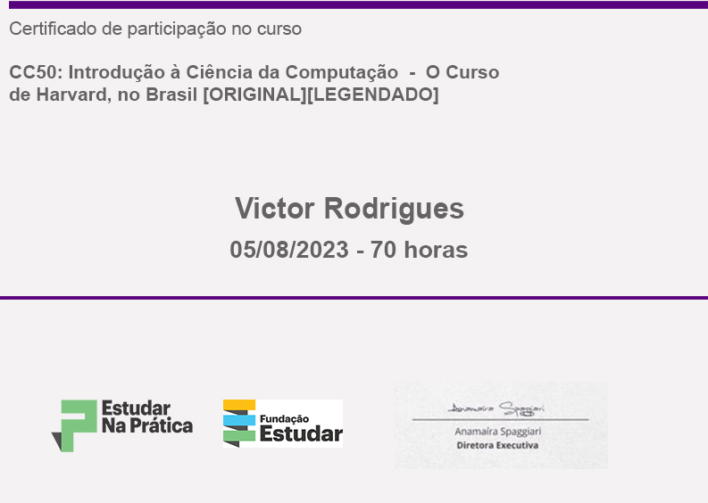

Um desenvolvedor em formação apaixonado por tecnologia, tenho 22 anos.
Estou sempre me desafiando com novos projetos e buscando feedback na comunidade de programação, além de compartilhar meus conhecimentos. 😁
Ah, também sou fã de jogos, filmes, séries e animes e aventuras. 💜
Durante minha jornada acadêmica, tenho buscado aproveitar ao máximo todas as oportunidades para aprender e crescer. Participei de projetos em equipe, hackathons e atividades extracurriculares relacionadas à programação.
Meu objetivo é me tornar um desenvolvedor de software altamente qualificado, capaz de enfrentar os desafios do mundo real e contribuir significativamente para projetos inovadores. Busco oportunidades que me permitam aplicar meus conhecimentos teóricos em situações práticas e colaborar com equipes talentosas para alcançar objetivos comuns..
Tenho interesse especial em áreas como desenvolvimento web, inteligência artificial e segurança da informação. Pretendo explorar essas áreas mais a fundo ao longo da minha jornada acadêmica e profissional..
Estou constantemente buscando maneiras de aprimorar minhas habilidades e conhecimentos. Participar de cursos online, workshops e eventos relacionados à programação faz parte da minha rotina de aprendizado contínuo.
Pretendo dedicar meu último ano de faculdade a trabalhar em projetos práticos que me permitam aplicar tudo o que aprendi até agora e me preparar para entrar no mercado de trabalho com confiança..
Além do meu crescimento pessoal, também valorizo a contribuição para a comunidade de desenvolvedores. Pretendo participar de iniciativas de código aberto e eventos de compartilhamento de conhecimento para ajudar a fortalecer a comunidade de tecnologia..
Caso necessário, posso fornecer referências de professores e mentores que possam atestar minha dedicação e capacidade acadêmica.
Como universitário, nossa meta é conceber e avançar com projetos acadêmicos, visando também uma inserção no mercado profissional. Ao longo do processo de aprendizagem, tenho me dedicado a aprimorar minhas habilidades em Python, Java e JavaScript, e tenho utilizado HTML e CSS para desenvolver websites e aplicações web. Estes trabalhos podem ser encontrados em meus projetos e no meu perfil do GitHub.